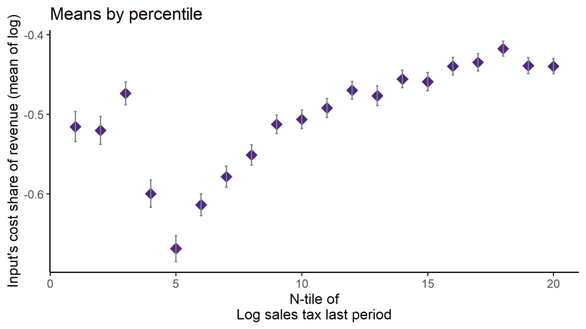
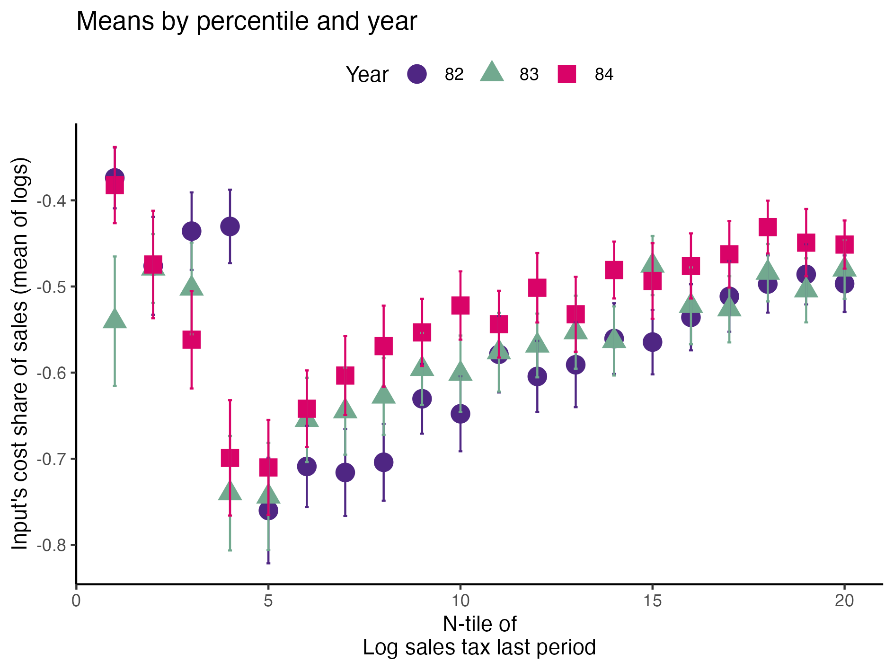

Tax evasion and productivity
Corporate tax evasion through cost overreporting spreads internationally causing governments significant tax revenue losses. Detecting and measuring the magnitude of tax evasion remains a challenge, even for the few studies on overreporting where researchers can exploit administrative data. Moreover, if this evasion strategy accounts for economic losses as large as reported, then cost overreporting might bias estimates of production functions, especially productivity. This paper addresses both issues. I first provide a novel strategy to estimate cost overreporting using commonly available firm-level data. I then formally show that ignoring cost overreporting leads to downward biased productivity estimates. Finally, I demonstrate how to recover productivity in the presence of tax evasion.
Introduction
Corporate tax evasion through cost overreporting spreads internationally causing governments significant tax revenue losses. Detecting and measuring the magnitude of tax evasion remains a challenge, even for the few studies on overreporting where researchers can exploit administrative data. Moreover, if this evasion strategy accounts for economic losses as large as reported, then cost overreporting might bias estimates of production functions, especially productivity. This paper addresses both issues. I first provide a novel strategy to estimate cost overreporting using commonly available firm-level data. I then formally show that ignoring cost overreporting leads to downward biased productivity estimates. Finally, I demonstrate how to recover productivity in the presence of tax evasion.
Cost overreporting arises when firms acquire false invoices to claim additional tax deductions on value-added and corporate income taxes. According to the OECD’s document “Technology tools to tackle tax evasion and tax fraud” (2017), cost overreporting — also known as “fake invoicing”, “ghost firms”, “invoice mills”, or “missing traders”— permeates internationally reaching Latin America, Eastern Europe, Asia, and Africa. For example, cost overreporting reportedly generated annual tax revenue losses amounting to 5.6% of Poland’s GDP in 2016 (Poland’s Minister of Finance, 2018); 0.2% of Chile’s GDP in 2004 (Gonzalez and Velasquez, 2013; Jorrat, 2001; CIAT, 2008); 0.2% of Colombia’s GDP (Portafolio, 2019); and 0.03% of Mexico’s GDP in 2018 (Senado de la Republica, 2019).
Recent evidence from Ecuador (Carrillo et al. 2022) shows that cost overreporting is widespread across firms and quantitatively large. Contrary to the literature consensus, evasion by overreporting is not limited to small, semi-formal firms. Firms were found to overreport up to 14.1% of the value of their purchase deductions.
The evidence from Ecuador also shows that big firms do not overreport inputs. This is unsurprising for several reasons. First, a large firm arguably draws more attention from the tax authority. Given its limited resources, the government optimizes its expected revenues by targeting the firms with the higher potential tax recovery, the few big ones. Second, the cost of being caught cheating is potentially higher for big firms. Large firms are likely to participate in international markets. A tax evasion scandal in Colombia, for example, might affect US sales. Finally, big firms potentially have more sophisticated strategies for tax evasion (e.g., profit shifting Bustos et al. 2022).
Despite its relevance, cost overreporting has been mostly overlooked by the literature. On one hand, the few studies on this evasion strategy exploit detailed administrative data (Carrillo et al. 2022; Zumaya et al. 2021). Government tax authorities restrict access to administrative data because of firms’ confidentiality concerns. On the other hand, to the best of my knowledge, no study has attempted to structurally identify cost overreporting. Unlike the case of individuals (Paulus 2015; Pissarides and Weber 1989), when it comes to corporate tax evasion, researchers have to account for an additional source of unobserved heterogeneity, productivity. Why? Because cost overreporting might be naively quantified as low productivity. Intuitively, for a given output level, high input utilization by a firm could be explained by either the amount of input the firm overreports to evade taxes or by a low productivity shock.
To address this gap in the literature, first I formally show that ignoring tax evasion leads to downwardly biased productivity estimates. I then provide a new estimation strategy, requiring only commonly available firm-level data, to jointly recover the densities of tax evasion and productivity. The intuition works as follows. In the absence of tax evasion, the first-order conditions of the firms’ cost-minimization problem inform about a common technology, the production function. Consequently, in the presence of cost overreporting, deviations from this common technology identify tax evasion up to the current-period output shock. Then, from the subset of non-overreporting firms, the strategy identifies the production function parameters and the density of the output shock. Finally, using deconvolution techniques, I can jointly recover the distributions of tax evasion and productivity.
In a preliminary application, I show how to use the method to learn about tax evasion even when we do not know the subset of non-evading firms, but there has been a change in fiscal policy that incentivizes cost overreporting. Using firm-level data from Colombia between 1981 and 1991, I show that tax evasion through cost overreporting increased after the fiscal reform of 1983 between 8 and 9% in 1985 and 1986. This result stands at odds with previous studies that indicate that the evasion of income tax and VAT declined during this period (Sanchez & Gutierrez, 1994)
1 The setting
Suppose we have access to panel data, where we observe output \(Y_{it}\), intermediate inputs \(M_{it}\), capital \(K_{it}\), labor \(L_{it}\), and output \(P_{t}\) and intermediate input prices \(\rho_t\) for \(I\) firms over \(T\) periods. Then our set of observations is \(\mathcal O = \{Y_{it}, M_{it}, K_{it}, L_{it}, P_{t}, \rho_t\}_{i\in I, t \in T}\). As is standard in the literature, firms are price-takers and the intermediates are flexible.
The objects of interest are the production function (PF), \(Y_{it}=G(M_{it}, K_{it}, L_{it})e^{\omega_{it}+\varepsilon^Y_{it}}\), and productivity \(\omega_{it}\). \(\varepsilon^Y_{it}\) is the current period output shock. We are also interested in the Markov process of productivity, which we assume is AR(1), \(\omega_{it}=\delta_0 + \delta_1 \omega_{it-1}+\eta_{it}\), with \(\mathbb{E}[\eta_{it}]=0\) and \(\eta_{it}\perp\omega_{it}\).
1.1 Tax evasion and the productivity bias
Firms overreport their true intermediate inputs \(M^*_{it}\) by \(e^{\varepsilon^M_{it}}\) to evade taxes. Then, reported inputs are
\[ M_{it}=M^*_{it}e^{\varepsilon^M_{it}} \]
with \(\varepsilon_{it}^M\ge0\) and \(\varepsilon_{it}^M\not\perp M^*_{it}\). A simple model of tax evasion through input overreporting can be found in the appendix.
It is fairly easy to see that the productivity bias, the difference between the naively estimated \(\tilde\omega_{it}\) and true productivity \(\omega_{it}\) is as follows:
\[ \mathbb{E}[\tilde\omega_{it}|\mathcal{I}_{it}]- \mathbb{E}[\omega_{it}|\mathcal{I}_{it}] \le \ln\mathbb{E}\left[ \frac{G(M^*_{it}, K_{it}, L_{it})}{G(M^*_{it}e^{\varepsilon^M_{it}}, K_{it}, L_{it})}\Bigg|\mathcal{I}_{it}\right] \le 0 \]
Where \(\mathcal{I}\) stands for the information set of firm \(i\) in time \(t\).
The previous result holds because of Jensen’s inequality and because \(G(\cdot)\) is monotonically increasing in its arguments.
2 Identification strategy
My identification assumption is motivated by the empirical evidence showing that very large firms do not evade taxes by input overreporting (Carrillo et al. 2022). Hence, I assume I know the quantile of the size distribution of compliant firms.
In addition, I impose the following timing assumption.
Assumption \(\ref{ass-ind}\) implies that input overreporting is independent of the current period output shock, \(\varepsilon^M_{it} \perp \varepsilon^Y_{it}\). In the literature is not rare to assume that the output shock is not part of the information set of the firms, \(\varepsilon^Y_{it}\not\in \mathcal{I}_t\) (Gandhi et al. 2020). Timing and information set assumptions are not uncommon for identification strategies in production functions and demand estimation (Ackerberg et al. 2021; Ackerberg 2019).
2.1 Identifying the production function parameters
Suppose the production function is Cobb-Douglas, \(G(M^*_{it}, K_{it}, L_{it})e^{\omega_{it}+\varepsilon^Y_{it}}=M^{*\beta}_{it}K_{it}^{\alpha_K}L_{it}^{\alpha_L}e^{\omega_{it}+\varepsilon^Y_{it}}\). Then, we can use the first-order conditions of the firms’ cost minimization problem on the flexible input, as in Gandhi et al. (2020), and assumption \(\ref{ass-comp}\) to recover the production function parameter \(\beta\).
\[ \begin{aligned} \ln\left(\frac{\rho_t M^*_{it}}{P_{t}Y_{it}}\right)+\varepsilon^M_{it}&=\ln\beta + \ln \mathcal{E}- \varepsilon^Y_{it} \\ \mathbb{E}\left[\ln\left(\frac{\rho_t M^*_{it}}{P_{t}Y_{it}}\right)\Bigg| S_{it}>s\right]&=\ln\beta \end{aligned} \tag{1}\]
\(\mathcal{E}=\mathbb{E}[e^{\varepsilon_{it}^{Y}}|\mathcal{I}_{it}]\)
Note that this is the case because \(\mathbb{E}[\varepsilon^Y_{it}|S_{it}>s]=\mathbb{E}[\varepsilon^Y_{it}]=0\). That is, there is no selection on the output shock. Therefore, as long as our measure of size is not structurally related to Equation 1 — like output or revenue in the same period—, the output elasticity of input, \(\beta\), can be recovered.
2.2 Identifying the Markov Process of Productivity
If we were to follow Gandhi et al. (2020) to recover the Markov process of productivity, we could only have estimates for firms with size \(S_{it}>s\).
\[ \begin{aligned} \mathcal Y_{it}&\equiv \ln Y_{it}-\varepsilon^Y_{it}-\beta \ln M_{it}-\alpha_K \ln K_{it}-\alpha_L \ln L_{it}= \omega_{it}\\ \mathbb{E}[\mathcal Y_{it}|\mathcal Y_{it-1},S_{it}>s] &= \mathbb{E}[\omega_{it}|\omega_{it-1},S_{it}>s] \end{aligned} \]
However, it is likely that there would be selection on \(S\), i.e., \(\mathbb{E}[\omega_{it}|S_{it}>s]\not=\mathbb{E}[\omega_{it}]\). In other words, larger firms will have a higher probability of getting a higher draw of productivity. Therefore, the parameters of the AR(1) process of productivity would be biased.
However, for every firm, I can form the following variable using observed variables and the production function parameter I recovered from the first stage.
\[ \begin{aligned} \mathcal V_{it}\equiv&\ln\left(\frac{\rho_t M_{it}}{P_{t}Y_{it}}\right)-\ln\beta \notag \\ &=\ln\left(\frac{\rho_tM^*_{it}}{P_{t}Y_{it}}\right)-\ln\beta+\varepsilon^M_{it} \notag \\ &=-\varepsilon^Y_{it} +\varepsilon^M_{it} \end{aligned} \]
This is useful because I can recover the tax evasion up to a random variable, \(\varepsilon^Y_{it}\), with mean zero and, by assumption \(\ref{ass-ind}\), independent of \(\varepsilon^M_{it}\).
Likewise, I can recover the true inputs \(M^*_{it}\) and productivity up to \(\varepsilon^Y_{it}\).
\[ \begin{aligned} \mathcal M_{it}&\equiv \ln M_{it}-\mathcal V_{it}\\ & = \ln M^*_{it} +\varepsilon^M_{it}-(\varepsilon^M_{it}- \varepsilon^Y_{it}) \\ & = \ln M^*_{it} + \varepsilon^Y_{it} \\ \\ \mathcal W_{it} & \equiv \ln Y_{it} - \beta\mathcal M_{it}-\alpha_K \ln K_{it}-\alpha_L \ln L_{it}\\ & = \beta\ln M^*_{it}+\alpha_K \ln K_{it}+\alpha_L \ln L_{it}+\omega_{it}+\varepsilon^Y_{it}-\beta\ln M^*_{it}-\beta\varepsilon^Y_{it}-\alpha_K \ln K_{it}-\alpha_L \ln L_{it} \\ & = \omega_{it}+(1-\beta)\varepsilon^Y_{it} \end{aligned} \]
I can use \(\mathcal W_{it}\) to recover \(\delta=[\delta_0,\delta_1]'\).
\[ \begin{aligned} \mathbb{E}[\mathcal W_{it}|\mathcal W_{it-1}]=&\\ \mathbb{E}[\omega_{it}|\mathcal W_{it-1}]=&\delta_0+\delta_1\mathbb{E}[\omega_{it-1}+(1-\beta)\varepsilon^Y_{it-1}|\mathcal W_{it-1}]\\ &-\mathbb{E}[(1-\beta)\varepsilon^Y_{it}|\mathcal W_{it-1}] +\mathbb{E}[\eta_{it}|\mathcal W_{it-1}]\\ =&\delta_0+\delta_1\mathbb{E}[\omega_{it-1}|\mathcal W_{it-1}] \end{aligned} \]
2.3 Deconvoluting
But I can go further and recover the densities of tax evasion and productivity at every period. The key insight is that from the 1st stage, I also learn the distribution \(m\) of \(\varepsilon^Y_{it}\). Hence, I can use non-parametric density deconvolution methods.
For completeness, I reproduce a result from probability theory that allows me to pursue these techniques.
Definition 1 The density of the sum of two random variables is equal to the of the densities of both addends; hence
\[h^d = f^d*m = \int f^d(\mathcal Z^d - \varepsilon^Y)m(\varepsilon^Y)d\varepsilon^y\]
where \(h^d\) is the density of \(\mathcal Z^d\in \{\mathcal{E,X,W}\}\) (Meister, 2009)
The result holds by definition for productivity and true inputs, and by assumption \(\ref{ass-ind}\) for tax evasion.
Intuitively, for every \(n\)-th moment \(\mathbb{E}[(\varepsilon^{Y}_{it})^n|S_{it}>s]=\mathbb{E}[(\varepsilon^{Y}_{it})^n|t]=\mathbb{E}[(\varepsilon^{Y}_{it})^n]\). Therefore, I can get any moment of the tax evasion \(\varepsilon^M_{it}\) distribution \(\forall t\in T\). For example,
\[ \begin{aligned} \mathbb{E}[\mathcal E_{it}|t]&=\mathbb{E}[\varepsilon^M_{it}|t]-\mathbb{E}[\varepsilon^Y_{it}]=\mathbb{E}[\varepsilon^M_{it}|t] \\ \\ \mathbb{Var}[\mathcal E_{it}|t]&=\mathbb{Var}[\varepsilon^M_{it}|t] +\underbrace{\mathbb{Var}[\varepsilon^Y_{it}]}_{known}\\ \end{aligned} \]
Therefore, I can recover the distribution of tax evasion and how it has changed over time. Furthermore, I can do the same with true inputs \(M_{it}^*\) and productivity \(\omega_{it}\).
Moreover, I can get any mixed moment \(\mathbb{E}[(\mathcal{Z}^c, \mathcal{Z}^d)^n|t]\) and learn how tax evasion changes with productivity, for instance, and how this relationship has evolved.
\[ \mathbb{Cov}[\mathcal{E}_{it},\mathcal{W}_{it}|t]=\mathbb{E}[\varepsilon^M_{it}\omega_{it}|t] -\underbrace{ (1-\beta)\mathbb{E}[(\varepsilon^{Y}_{it})^2]-\mathbb{E}[\varepsilon^M_{it}|t]\mathbb{E}[\omega_{it}|t]}_{ known } \]
3 Colombia 1981-1991: an application
During this period, Colombia went through three major fiscal reforms (1983, 1986, 1990). The 1983 reform increased the value-added tax (VAT) from 6% to 10% and expanded the number of the products and services that were levied. In addition, the 1983 fiscal reform required firms with profits over COL$ 200,000 and owned by individuals to pay profit taxes. The 1986 reform relocated the tax collection and reception of tax reports to the banking system, among other things. The 1990 reform increased the VAT from 10% to 12%. See section the appendix for more details on the fiscal reforms.
Intuitively, we expect higher levels of tax evasion if tax rates increase. On the other hand, reporting more information to the authority —like the firms required to report and pay profit taxes in 1983—, or having a third party reporting on your private information — like the banking system being responsible for the collection and reception of tax reports in 1986— would decrease tax evasion.
3.1 Data
The data is a well-known data set that has been used in the estimation of production functions and productivity before. The dataset comes from the Annual Survey of Manufacturing (EAM) and contains information about manufacturing firms with more than 10 employees from 1981 to 1991.
A simple graphical analysis shows that the average (of the log) intermediates cost share of sales started growing after 1983 and that it stabilized in 1988 after the policy changes of the 1986 reform settled in (Figure 1). The dataset does not capture any changes after the 1990 reform, although there is only one more year of data.

Furthermore, we can appreciate in Figure 2 two different patterns before and after the threshold where firms start being required to report and pay profit taxes. We can observe that the intermediate’s cost share decreases abruptly by the 20th percentile. Then, it reaches its minimum by the percentile 25th and starts growing up till the end of the distribution.
Before the 25th percentile, firms only file and pay VAT, starting in the 25th percentile, firms report and pay in addition profit taxes. In other words, the information they have to provide to the authority is greater. The bunching before the 25th percentile is also informative about firms’ beliefs of the probability of getting caught evading, or the difficulty for firms in evading as they report more information to the authority.
In addition, Colombia has a progressive profit tax schedule. Firms with higher profits pay a higher tax rate. Higher tax rates lead to increased incentives to evade them; a plausible explanation of why the increasing pattern.

As a validation exercise, we can see that the VAT changes induced by the three fiscal reforms are captured in the dataset. Figure 3 shows that the sales tax increased to 10% after the 1983 reform, and then around 12% after the 1990 reform.

Just as an exercise to see if other economic changes in this period were driving the apparent changes in overreporting, Figure 4 shows that sales, for instance, were not exactly following the changes in fiscal policy. Sales start to grow during 1983, the year of the reform, whereas the cost share of sales started to grow the year after. Likewise, sales fall in 1986, while the cost share seems to reduce its growth after 1986.
4 Empirical evidence
To inform the empirical application, I analyze Figure 2 by year, focusing on the years around the policy change of 1983. Figure 5 shows the mean of the intermediate’s cost share of sales (mean log share, henceforth) by percentile of the sales taxes paid the previous year and by year, only for 1982 to 1984.

The first observation that jumps into view is that the firms that in 1982 only paid VAT and were required to pay profit taxes in 1983 seem to decrease their intermediates’ cost share of sales drastically in 1983, precisely. Please note how the mean log share of the 20th percentile (4/20 in Figure 5) drops significantly from 1982 to 1983.
The second consideration is that there is a generalized increase in the mean log share from 1983 to 1984 across almost all the distribution. Although the increases differ across the percentiles of the distribution, the highest 10% of the distribution increased the least. This makes sense if the tax authority scrutinizes with the finest detail the firms paying the greatest tax bill.
Based on this graphical analysis, I investigate with a simple empirical model 1) how the firms required to pay profit taxes by the 1983 reform adjusted their tax evasion and 2) the change in overreporting induced by the 1983 and 1986 reforms in subsequent years.
On one hand, as Figure 5 suggests, I expect firms required to report and pay profit taxes to reduce their tax evasion. This might seem counterintuitive as higher taxes will increase the incentive to evade. These firms however have now to report more information to the tax authority increasing the difficulty to evade. In addition, firms had to adjust their beliefs about the probability of being caught evading taxes under the additional required information. On the other hand, Figure 1 and Figure 5 suggest that tax evasion increased after the 1983 reform and it ceased to grow after the 1986 reform.
Of course, we would like to control for other factors that might have affected the log share during these years. We would need to control also for industry and regional variation. Consequently, to test the change in overreporting by firms required to pay profit taxes in 1983 (20th percentile in Figure 5), I use as the control group the firms at the 10 and 95 percentile of the distribution. The intuition is that these firms were not affected by this fiscal policy change. Furthermore, firms in the 10th percentile are more similar to the affected firms than the ones at the 95th percentile. However, the firms at the 95th percentile receive the most attention from the tax authority, consequently, they are less likely to adjust their log share because of tax evasion motives. Likewise, I use the 95th percentile firms as the control group to test the change in overreporting induced by the 1983 and 1986 reforms. For these two specifications, the base year is 1983 and 1986 respectively.
The results of the estimations in ?@tbl-did-change-threshold show that firms that were required to report and pay profit taxes in 1983 because of the change in the threshold reduced their tax evasion through cost overreporting by 14%. ?@tbl-did-1983 shows that tax evasion grew between 8% and 9% in 1985 and 1986, following the increased value-added tax rates of the 1983 fiscal reform. Finally, ?@tbl-did-1986 indicates that the tax evasion growth came to a halt after 1986, as the subsequent years do not show a significant increase with respect 1986.
Conclusions
I provide a new estimation strategy to jointly recover tax evasion through cost overreporting and productivity that only requires commonly available firm-level data.
Studying manufacturing firms from Colombia, I show that the method can be used to investigate tax evasion using surveys and fiscal policy changes. The 1983 reform required firms with profits above COL$ 200,000 or more to report income tax in 1983 in addition to the value-added tax. These firms reduced their tax evasion by cost overreporting by 14% likely due to the additional information firms needed to report and the adjustment in their beliefs on the probability of getting caught evading.
Likewise, the evidence suggests that this type of tax evasion increased after the reform of 1983 between 8 and 9% in 1985 and 1986. The increase in value-added tax likely amplified the incentives to evade. This result stands at odds with previous studies that indicate that the evasion of income tax and VAT declined during this period (Sanchez & Gutierrez, 1994). Finally, evidence suggests that tax evasion growth came to a halt after the 1986 reform where the banking system took over the tax collection and reception of tax reports from the tax authority.
References
Colombia’s fiscal reforms of 1983, 1986, and 1990
The 1983 reform tried to increase the country’s income tax and reactivate the economy. The 1986 reform attempted to reduce evasion, among other things. The 1990 reform took place during the process of commercial opening. It had the objective of developing the capital market and incentivizing the repatriation of foreign capital.
4.1 1983 Reform
Corporate profit tax (impuesto de la renta): In 1983, Colombia reduced the maximum corporate tax rate from 56% to 49%. The progressive tax schedule went from 11.5% to 49%. However, the base of the taxpayers was increased.
VAT (IVA): Increased from 6% to 10%. The 1983 reform set the VAT on national vehicles between 25-30%, depending on the motor. The motorcycles’ VAT rate was set at 20%.
The tax authorities focused on the 5% of the big taxpayers that constituted 80% of the country’s tax revenue.
4.2 1986 Reform
Corporate profit tax: In 1986, Colombia set the corporate max tax rate at 30% starting in 1989. To ease the transition, they set tax rates of 33%, 32%, and 31% for 1986, 1987, and 1988.
The reform relocated the tax collection and reception of tax reports to the banking system. Likewise, the 1986 reform increased the control over the big taxpayers.
4.3 1990 Reform
Corporate income tax: among other things, the foreign investment tax rates were reduced. Also, the reform reduced the base of the taxpayers obligated to file tax reports.
VAT was increased from 10% to 12%. In addition, several exceptions were eliminated, so the basket of taxed goods increased.
Import taxes were reduced and some goods were exempted.